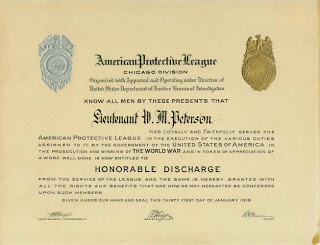
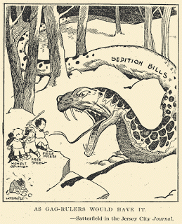

A "British Tar" of a different kind: American patriots of the Revolutionary era carry out an act of criminal sedition against their lawful government.
That persons who are hunting after places, offices and contracts, should be advocates for war, taxes and extravagance, is not to be wondered at..... The country, during the time of the former Administration, was kept in continual agitation and alarm; and that no investigation might be made into its conduct, it entrenched itself within a magic circle of terror, and called it a SEDITION LAW. --
Thomas Paine, Letters to the Citizens of the United States (1802-1803), inspired by his outrage over the Alien and Sedition Acts.
"Hang him, shoot him or lock him up in a concentration camp."
To people not tutored in the nuances of Progressive dogma, those sentiments appear to be high-octane hate speech of the "eliminationist" variety. This Soviet-style prescription for dealing with dissent was offered during a March 1942 meeting of the Overseas Writers Association (OWA) that was attended by numerous high-ranking officials from FDR's administration.
The target of the OWA's Stalinoid hate session was a brace of refractory newspaper publishers -- Robert McCormick of the Chicago Tribune and Joe Patterson of the New York Daily News.
Utterly contemptuous of the Axis powers and unflinching in their commitment to an "America First" foreign policy, McCormick and Patterson were among those commendable souls whose marrow-deep contempt for fascism encompassed not only Hitler and Mussolini, but also Roosevelt, who would go on to be America's first fascist president-for-life.
Following Pearl Harbor -- an infamous incident in which FDR was, at the very least, a silent accomplice -- Roosevelt mounted an attempt to prosecute his domestic critics for disloyalty.
To that end he began barraging Attorney General Francis Biddle with press clippings from publications critical of his reign.
"Biddle started receiving notes from FDR ... asking `What are you doing to stop this?'" recalled historian Thomas Fleming in his valuable study The New Dealers' War. Had Biddle been serious about his constitutional oath, his one-word reply would have been: "Nothing." This wouldn't have availed much with FDR, who -- even in the dismal company of his fellow chief executives -- distinguished himself by his disdain for the Constitution. Roosevelt, observes Fleming, "was not much interested in the theory of sedition or in the constitutional right to criticize the government during wartime. He just wanted this anti-war talk stopped."

Even at that relatively early stage of America's descent into executive dictatorship, those belonging to the Washington/New York press corps -- and those composing the larger community of literati -- aligned themselves to the presidency like iron filings to a magnet. So it's not surprising that a large number of journalists and other writers who should have rallied to the defense of FDR's critics eagerly helped to compile rosters of heretics, and went about gathering the wood to burn them at the stake.
Shortly after the OWA hate session, a "journalistic lynch mob" met with Attorney General Biddle "and requested that he find grounds, any grounds, for indicting McCormick and Patterson," recalls Justin Raimondo in his indispensable book Reclaiming the American Right. "Archibald MacLeish, the `poet laureate of the New Deal' and Librarian of Congress, gave the lunch party his blessings when he told the ANPA [American Newspaper Publishers Association] that certain of their members were guilty of treason."
Although neither McCormick nor Patterson was prosecuted, Biddle -- under relentless pressure from FDR -- assigned Justice Department attorney William Power Maloney to compose a roster of alleged seditionists. Eventually 28 writers and activists who had distinguished themselves by criticizing FDR and opposing the war were indicted for treasonous sedition.
The prosecution's theory closely tracked a luridly dishonest "expose" published by Avedis Derounian under the pseudonym John Roy Carlson. Prior to U.S. involvement in WWII, Derounian was hired by a Marxist group called "Friends of Democracy" -- a self-appointed "watchdog" organization that supported American intervention on behalf of Stalin's Soviet regime -- to infiltrate various right-wing groups as an informant and provocateur.
The two books Derounian/Carlson produced, Under Cover and The Plotters, provided the template used today by Morris Dees and other self-anointed watchdogs of that ilk: A handful of marginalized, inconsequential figures who openly espoused bigoted views or support for the Axis were quoted as expressing agreement with the America First Committee or critics of FDR's domestic policies. In this fashion, "all criticism of the New Deal and FDR [was equated] with treason and support for Hitler," Raimondo recalls.
Comrade Vishinsky, I presume? O. John Rogge, the FDR regime's prosecutor at the 1944 sedition show trial.

This familiar and tiresome rhetorical trope was adopted as a legal strategy by Biddle and his subordinates -- first Moloney and then, following that attorney's dismissal for incompetence, O. John Rogge.
As Thomas Fleming summarizes, the Justice Department insisted "that the defendants were guilty of sedition because passages in their writings and speeches were very close to Nazi statements on Roosevelt, the Jews, and similar topics."
While most of the American public supported the war effort, and countenanced indefensible policies such as the wholesale imprisonment of Japanese-Americans, many Americans heard echoes of the Stalinist show trials emanating from the federal courtroom that resonated with Rogge's denunciation of the "seditionists." This resonance led critics of the spectacle to refer to Rogge as "Vishinsky."
We will never know whether FDR's plan to imprison his critics for their words would have succeeded. A mistrial was declared following the presiding judge's fatal heart attack. In 1946, after FDR's death and the end of WWII, the case was dismissed by Federal District Judge Bolitha Laws, who described it as "a travesty on justice."
By that time, some of the 28 defendants had spent years behind bars for the supposed crime of expressing their views in public. Among those who had been rounded by by the Regime could be found a deaf sign painter, a maid, a factory worker from Detroit, and several people who ran one-man publishing operations -- the WWII-era equivalent of bloggers.
In some ways, the FDR-era dissidents prosecuted as enemies of the state FDR were more fortunate than the scores of Montana citizens who were imprisoned during World War I under that state's version of the federal Sedition Act. Like the federal measure, the Montana anti-sedition statute criminalized the utterance of publication of opinions critical of the federal government, particularly the military and the president.
Elsewhere in the war-crazed United States, the Wilson Regime collaborated with officially sanctioned vigilante groups such the American Protective League (APL), which collaborated with the embryonic FBI (called the Bureau of Investigation at the time) to identify, harass, and punish those suspected of "disloyalty." This public-private partnership in suppressing dissent created what historian Diane M.T. North called "an elaborate nationwide spy network" that "relied on reckless, undocumented accusations" of subversive activities.
The APL played a prominent role in the "Slacker Raids" of 1918, a purge conducted in New York and New Jersey during which tens of thousands of American citizens and legal resident aliens were arrested on suspicion of desertion or refusal to submit to military slavery (commonly called the "draft").


Officially sanctioned bullying: Certificates of this kind were issued by the federal government to those who joined the American Protective League, a nation-wide vigilante group used to suppress and punish dissent during WWI.
"The roundup began at 7:00 a.m., Tuesday, September 3," recalls Don Whitehead in his book The FBI Story. "At the close of the three-day raid, some 50,000 men had been hustled from theaters, restaurants, street cars, railway stations, pool halls and street corners, sometimes to the jeer of street crowds. Soldiers, with bayonets fixed on their rifles, halted men on the streets and demanded proof of registration [for the draft]. APL operatives `arrested' suspects. Out-of-town visitors who had forgotten their cards were hauled off to roped arenas which became known as `bull pens.' Worried wives came searching for lost husbands. Workers were seized when they left their jobs. Men were forced to stand for hours, without food, unable to telephone for help in establishing their innocence."
When it wasn't participating in direct mob violence against suspected "slackers," the APL was diligently scrutinizing everything said or written in their communities in search of "seditious libel."
The Bureau of Investigation gratefully acknowledged the work of the Minnesota APL, which provided "a complete record of every person living in the Duluth district who uttered words against the Government from April 1, 1917, until the division was disbanded on February 1, 1919."
The "Council of Defense," an APL affiliate in Henry County, Missouri, devised a three-card "warning system" targeting people considered "to be `speaking or acting in a disloyal way,'" recalls Whitehead. At the first "violation," an individual would be given a white card announcing that he had been reported as someone whose "attitude and utterances [were] dangerous and disloyal. We recommend caution and a complete change of attitude."


Those who stubbornly persisted in their independence of mind would receive a blue card amplifying the warning. In exceptional cases a particularly stubborn person would be issued a final red card instructing him to "report at once your change of front to the Postmaster" if he wanted to "avoid Summary Action" -- which could mean anything from ostracism to imprisonment to lynching.
The totalitarian actions of Wilson and FDR and their supporters form the impeccably progressive pedigree of Obama-aligned statists who are agitating for another nation-wide purge of seditionists.
Now, as then, the administration can count on the efforts of self-appointed watchdogs and political vigilantes -- chief among them the squalid Morris Dees, whose Southern Poverty Law Center is in everything but name an adjunct to the FBI. The indictment of the Hutaree Militia, which treats inflammatory rhetoric not far removed from the sentiments of Paine, Jefferson, and Samuel Adams as evidence of criminal intent, will be studied carefully by aspiring Vishinkys seeking to hold their own show trials.
Most ominously, Obama himself -- acting on "counter-terrorism" precedents established by his predecessor -- now claims the supposed authority to order the summary execution of U.S. citizens accused of "seditious libel."
"Sedition," as noted here previously, is our country's oldest, noblest, and most indispensable political tradition. "Libel" of any variety entails deliberate falsehood. Yet according to Obama-centric collectivists, telling the unpleasant truth about government -- thereby denying it unearned legitimacy -- somehow equates to "seditious libel."
Writing in The Nation, Princeton associate professor Melissa Harris-Lacewell observes: "I often begin my political science courses with a brief introduction to the idea of `the state.' The state is the entity that has a monopoly on the legitimate use of violence, force, and coercion. If an individual travels to another country and kills its citizens, we call it terrorism. If the state does it, we call it war. If a man kills his neighbor it is murder; if the state does it it is the death penalty. If an individual takes his neighbor's money, it is theft; if the state does it, it is taxation."
Exactly the same points have been made by Augustine ("absent justice, what are kingdoms but vast robberies?"), Thoreau, Spooner, Nietzche, Nock, Rothbard, and others who understand the ineradicably criminal nature of the State. What they condemned, Harris-Lacewell and her comrades celebrate.
Like most of her professional colleagues, Harris-Lacewell subscribes to a Leninist view of politics in which the State exercises "power without limit, resting directly on force." She also embraces a view closely akin to Mussolini's definition of totalitarianism: "Everything within the State, nothing outside the State, nothing against the State."
"The Tea Party is a challenge to the legitimacy of the U.S. state," decrees commissarina Harris-Lacewell. "When Tea Party participants charge the current administration with various forms of totalitarianism, they are arguing that the government has no right to levy taxes or make policy. Many GOP elected officials offered nearly secessionist rhetoric from the floor of the Congress [during the debate over nationalizing health care]. They joined as co-conspirators with the Tea Party protesters by arguing that this government has no monopoly on legitimacy."
In order to be considered a criminal conspiracy, the accused must be charged with an overt act. For Harris-Lacewell, the actus reus occurred when protesters assailed Rep. John Lewis, who as "an elected official" is not merely a human being, but a quasi-divine "embodiment of the state."

"When protesters spit on and scream at duly elected representatives of the United States government it is more than an act of racism," insists Harris-Lacewell in a gratuitous reference to Lewis's ethnic background. "It is an act of sedition."
The tacit but obvious corollary to Harris-Lacewell's charge against "seditionists" is the same demand made by FDR's partisans in 1942: Hang them, shoot them, lock them up in concentration camps.
For Sara Robinson of the Soros-funded K-Street outfit called Campaign for America's Future, the seditious conspiracy includes not only Tea Party activists but practically anybody who has taken Obama's name in vain.
"Advocating, encouraging, and sanctioning sedition is the new norm on the conservative side," wrote Robinson in a recent essay. For decades, "the entire right wing" has been committing "sedition in slow motion," she continues; writers, ranters, and pundits of that persuasion offer constant "incitement to revolt against [Obama's] administration"; they are motivated by "seditious intent" and issue "nearly constant invitations to criminal sedition."
"What these folks are telling us," Robinson writes by way of stating her own Leninist bottom line, "is that they no longer recognize the government's sole franchise on the use of force"; this is what makes such people "seditionists in intention or fact -- and thus enemies of the state, plain and simple."
Only someone intimately in touch with his or her inner Vishinsky could use the expression "enemy of the state" as an accusation, rather than a plaudit. Only someone deeply ignorant of the American tradition of liberty protected by law, and incurably contemptuous of the U.S. Constitution (particularly the Second Amendment), could insist that Americans have a duty to treat the government as an entity with a "monopoly" or "sole franchise" on the use of force.
Nothing is more consummately anti-American than treating government as a monopoly of any kind.
In 1802, Thomas Paine warned that within a few years of the War for Independence and the ratification of the Constitution, a faction that had "lost sight of first principles" was "beginning to contemplate government as a profitable monopoly, and the people as hereditary property." It was this implacable appetite for power, Paine concluded, that inspired the effort to criminalize as sedition any attempt to "oppose any measure of the government of the United States" or to express any opinion meant to "bring into contempt or disrepute" the President or any other "embodiment of the State."
Admittedly, Obama-era militant collectivists don't quite fit that description, since they prefer ideological despotism to the hereditary variety.
In dealing with those who practice sedition, the Stalinist in the Oval Office is not limited to hanging them, shooting them, or consigning them to the gulag, nor does he have to wait until a show trial validates a pre-ordained guilty verdict.
Chris Floyd and David Swanson, two progressive commentators who are immune to Obama's personality cult, point out that the Blessed One now claims the power to order the summary execution -- via a missile attack carried out through an unmanned drone, if necessary -- of any U.S. citizen designed a "terrorist" by presidential decree.
"Barack Obama has ordered the murder of an American citizen" -- New Mexico-born Anwar al-Awlaki, a Muslim cleric now living in Yemen -- "without trial, without due process, without the production of any evidence," Floyd laments. "All it takes to kill any American citizen in this way is Barack Obama's signature on a piece of paper, his arbitrary designation of the target as a `suspected terrorist.' In precisely the same way -- precisely the same way -- Josef Stalin would place a mark by a name in a list of `suspected terrorists' or `counterrevolutionaries,' and the bearer of that name would die. This is the system we have now, the same as the Soviets had then: a leader with the unchallengable power to kill citizens without due process."
"Obama has made it crystal clear for even the most avidly self-duping progressive," concludes Floyd:
"He will murder his fellow citizens without trial or evidence if he sees fit. The state can murder whom it pleases. This is the system we have. This is what you support when you support Barack Obama.... If you support Obama now, in this, then there is no crime he can commit that you will not support. And thus you become one of those people that we all used to puzzle over, the accomodationists to brutal tyranny: `How did all those people go along with the Nazis? Why wasn't there more opposition to Stalin? How could they countenance all those obvious abominations? What kind of people were they?' Now you know. They were you. You are them."
Current trends indicate that seditious talk of this kind -- denying the state's monopoly on force, calling into disrepute its sanctified embodiment, the Holy One, Barack the Blessed -- could eventually earn Floyd a place on the dock next to the Hutaree militia and anyone else who speaks ill of the Anointed One.
 For your daily dose of unfiltered sedition, be sure to tune in for Pro Libertate Radio on the Liberty News Radio Network.
For your daily dose of unfiltered sedition, be sure to tune in for Pro Libertate Radio on the Liberty News Radio Network. Dum spiro, pugno!
16 comments:
"everything for the state; nothing outside the state; nothing against the state." benito mussolini.
"the state embraces everything, and nothing has value outside the state. the state creates right." franklin delano roosevelt.
"the state dominates the nation because it alone represents it." adolf hitler.
"there is a way which seemeth right unto a man, but the end thereof are the ways of death." proverbs 14:12.
A few quotes are in order to put things into perspective:
"And what country can preserve its liberties, if its rulers are not warned from time to time that this people preserve the spirit of resistance? Let them take arms....The tree of liberty must be refreshed from time to time, with the blood of patriots and tyrants." — Thomas Jefferson
"You must understand, therefore, that there are two ways of fighting: by law or by force. The first way is natural to men, and the second to beasts. But as the first way often proves inadequate one must have recourse to the second." — Niccolo Machiavelli
“All governments are the enemies of the people. The Founding Fathers knew this and had no illusions as to the eventual direction our government would take. This is the very purpose of the right to keep and bear arms. This right, granted by the hand of God and explicitly singled out for protection in the highest law of our nation, was intended to give the people the ultimate recourse of action in the face of a government that would seek to oppress them.” - Jon S. Koopman
The point of these quotes, two from brilliant men and one from an old curmudgeon, is that liberty is only enjoyed by those who are willing to fight for it. What freedoms we still have are due to men who engaged in treason against a repressive government. History repeats itself and eventually liberty will need to be claimed once again through actions seen as sedotious by the regime looking at the pointy end of the bayonet. I wish this were not so but any student of history is foolish to assume otherwise.
jk
Will, you made some good points in your talk tonight, as always. I was less distracted and able to hold a few more nuggets of truth in my mouth and swirl them around like wine. How wise our forefathers were. And you quoted Solzenhitzen(sp?) - thats who got me on this track of thought to begin with in 1976. Wonderful show.
It is a sad sad fact, and one most Americans are completely oblivious to, that our government brooks no question of its unbridled self-appointed powers. The old joke was that if you feel you're free then stop paying your taxes and see just how FREE you really are.
Two comments:
First, Liberal Fascism by Jonah Goldberg does a great job of documenting hte evidence of Wilson and FDR's fascism.
Second, Glenn Greenwald made an excellent observation regarding Obama bestowing upon himself the power to assassinate upon his decree.
"When Obama was seeking the Democratic nomination, the Constitutional Law Scholar answered a questionnaire about executive power distributed by The Boston Globe's Charlie Savage, and this was one of his answers:
5. Does the Constitution permit a president to detain US citizens without charges as unlawful enemy combatants?
[Obama]: No. I reject the Bush Administration's claim that the President has plenary authority under the Constitution to detain U.S. citizens without charges as unlawful enemy combatants.
So back then, Obama said the President lacks the power merely to detain U.S. citizens without charges. Now, as President, he claims the power to assassinate them without charges. Could even his hardest-core loyalists try to reconcile that with a straight face?"
Mr. Grigg,
Is it possible that Brandenburg v Ohio might be pertinent to the Hutaree defense?
I ran across mention of the Brandenburg case in Judge Napolitano's new book - Lies The Government Told You and was immediately reminded of some parallels to the Hutaree matter.
[W-III]
Another day, another Pulitzer-worthy and criminally underappreciated essay from Mr. Grigg.
This discussion may be more timely than you imagined.
http://www.freedomsphoenix.com/Uploads/001/Media/ARM10090.pdf
http://www.opencongress.org/bill/111-s3081/show
http://www.opencongress.org/bill/111-h4892/show
well,
God was clear when He said, "whatsoever a man soweth, that shall he also reap."
folks in govt can claim an authority they do not have, and even carry it out, but spiritually speaking, they open themselves to the same kind of treatment...and hostile act(s) for someone to carry out against them.
it's so sad that in their zeal, they forget this principle. probably because they are too busy pounding their chest saying, "who see-eth me!"
rick
Once again, Will, you have hit the Bulls-Eye!
I have re-interated time and again that the time has come for the break-up of this country.
Grigg Merely Diverts From Issue Of Deification Of Moralism-Pharisaism
(Apollonian, 12 Apr 10)
Okay, so now Grigg objects to deification of state and leaders of state, fine and dandy--and quite understandable, in line of previous legion of heroic anti-statists. So Grigg's just doing some "Me-tooing" here, no?--aside fm the history lesson fm recent past.
But what I object to regarding Grigg is he doesn't seem to acknowledge the connection w. MORALISM-Pharisaism and deification thereof. For that's how fascism works: violation of law and natural rights is ALWAYS justified by such "moralism."
So state (and fascist leaders thereof) is deified as the moralism it pretends to uphold is deified, right? And all the statists--they're "deified" as they're such up-standing moralists, aren't they?
In fact, that's very method of politicians and communists: "I'm for these people (whoever)," therefore everything I do is justified, including getting their votes.
For note that was "magnificent" innovation of Immanuel Kant: the idea that moralism (what's "good") now tweaks and determines reality (hence Christian TRUTH) itself. What followed in hist. of philosophy was Hegelian absolute state, Bismarckian socialism, then Marx, and now here we are.
For that's what's going on--deification of moralism, hence anti-racism (which Grigg likes and justifies), and lately deification of "environmentalism," for sake of which we need de-population, this last being somewhat new twist to things.
Indeed, now we have anti-"hate" which itself is deification. And it's this issue of moralism and pretended "good-evil" Pelagian heresy which Grigg continues to evade. Thus Grigg's problem then is deification of moralism vs. ABSOLUTE truth.
CONCLUSION: So if Grigg wants to uphold Christianity and truth, then doesn't he require denouncing of moralism and subjectivism? That's how Fed COUNTERFEITING is up-held--because gee whiz, but look at all the "good" we can accomplish therewith. Honest elections and death to the Fed. Apollonian
Grigg Merely Diverts From Issue Of Deification Of Moralism-Pharisaism
(Apollonian, 12 Apr 10)
Okay, so now Grigg objects to deification of state and leaders of state, fine and dandy--and quite understandable, in line of previous legion of heroic anti-statists. So Grigg's just doing some "Me-tooing" here, no?--aside fm the history lesson fm recent past.
But what I object to regarding Grigg is he doesn't seem to acknowledge the connection w. MORALISM-Pharisaism and deification thereof. For that's how fascism works: violation of law and natural rights is ALWAYS justified by such "moralism."
So state (and fascist leaders thereof) is deified as the moralism it pretends to uphold is deified, right? And all the statists--they're "deified" as they're such up-standing moralists, aren't they?
In fact, that's very method of politicians and communists: "I'm for these people (whoever)," therefore everything I do is justified, including getting their votes.
For note that was "magnificent" innovation of Immanuel Kant: the idea that moralism (what's "good") now tweaks and determines reality (hence Christian TRUTH) itself. What followed in hist. of philosophy was Hegelian absolute state, Bismarckian socialism, then Marx, and now here we are.
For that's what's going on--deification of moralism, hence anti-racism (which Grigg likes and justifies), and lately deification of "environmentalism," for sake of which we need de-population, this last being somewhat new twist to things.
Indeed, now we have anti-"hate" which itself is deification. And it's this issue of moralism and pretended "good-evil" Pelagian heresy which Grigg continues to evade. Thus Grigg's problem then is deification of moralism vs. ABSOLUTE truth.
CONCLUSION: So if Grigg wants to uphold Christianity and truth, then doesn't he require denouncing of moralism and subjectivism? That's how Fed COUNTERFEITING is up-held--because gee whiz, but look at all the "good" we can accomplish therewith. Honest elections and death to the Fed. Apollonian
Apollonian,
Welcome back.
You are unjustified in your allegation that "so now Grigg objects to deification of state and leaders of state, fine and dandy--and quite understandable, in line of previous legion of heroic anti-statists. So Grigg's just doing some "Me-tooing" here, no?"
I have been following this blog for some 3-4 years now, long before you appeared on it, and Mr. Grigg has been a consistent and courageous anti-statist.
In fact, he has told us on this blog (and I see no reason for him to lie,) that he was fired from his career job before he even started the blog, because of refusing to re-ingest and re-gurgitate the governbment's vomit of lies.
Not many of us can claim to have sacrificed our careers on the altar of the public good. Can you? If there were more courageous humanitarians like Mr. Grigg, (whom you insist on belittlitling as "Grigg") the air in this country would be a lot fresher and easier to breathe.
I do not know what your motives are - at least I commend you for not using foul language - but you should pick another target. (Me, for instance, as you have done before.) Mr. Grigg is not really someone you have differences of opinion with.
Yours respectfully,
Lemuel Gulliver.
WNG has written a beauty.
The Sedition Trial of 1944,I thought to myself, who is telling people today about this? Nobody.
I was reminded of what Tolkien wrote,
Much that once was is lost. For none now live who remember it.
Fellow patriots the WITHHOLDING of information is the most serious and frightening aspect of the Inner Party that controls the SideShow.
If Americans do not KNOW their past, their government's abuses, EXCEPT when it suited the Marxists, then they will go along with ALL that is planned.
Check into Rahm Israel Emanuel, read up on what happened to the Czar and his family, to TWENTY MILLION Russian Christians at the hands of the Bolshevik butchers.
In 'Embracing the State' the author talks about the executioners that the Russian Christians faced.
WNG knows the book and will understand to what I refer.
“Am I therefore become your enemy, because I tell you the truth?”
–- Galatians 4:16
1 Thessalonians 2:14-16
The mind set and policies you have just exposed remind me of the the former and current leadership of the once honorable John Birch Society. I along with a few other ordinary but principled employees were branded as seditionists for faithfully and honorably carrying out the principles upon which the organization was originally established. The petty small minded tyrrants exacted strong penalites upon the men and their families who stood upon biblical truth. Of course William Norman Grigg became a sort of Robert the Bruce in the Americanist liberty movement. I would say William Wallace but since I co-opted the Brave Heart theme he gets relegated to the great Bruce. Is he not just as worthy of our logistical and financial support as Washingtons Brave bootless troops at Vally Forge? Lets together make an online donation today so that this unique warrior who wields the pen more powerfully than most use the sword.
Join me as I pull out my credit card this morning and donate $100throught the pay pal at the bottom of the blog.If all of us contribute what we can regularly he can feed his family and stay on the front lines of the battle. I know some of you have been there for our warrior and I personally appreciate your love of liberty and willingness to support this brave man.
Grigg Merely Assails Externals Without Addressing Root Cause
(Apollonian, 13 Apr 10)
"Lemuel": note I have voluminous "leg" to standing upon, my work going back long and far--and consistently--ck my archive at NewNation.org, under "commentary."
I'm Christian (hence anti-semitic), going for saint-hood, specifically as crusader against Pelagian heresy ("good-evil" delusion/fallacy, founded upon HUBRIS of perfectly "free" human will).
Note Pelagianism is VERRRRRRRY interesting kind of heresy which most horrifically be-devils present mankind, surely foremost element of present ZOG-Mammon empire-of-lies.
Pelagianism first cropped-up to official notice of St. Augustine, as u may know--it re-arose in time of St. Martin Luther who then denounced Erasmus and Roman "Vatican" who were pushing "good works," making money off the poor volk.
And nowadays, no less than (at least) the third serious wave of Pelagianism CONTINUES to rage, this in form of (especially) Immanuel Kant's (also Eng. utilitarians') rationalistic-styled Pharisaism by which he pretends to over-rule TRUTH and reality by means of this moralism.
For never doubt all present statists, as fm Marx and Hegel, essentially found their justifications upon this latest Kantian-styled and -inspired Pelagianism--ANYTHING is justified if it's founded in "good."
Presently, 80% of mankind is scheduled for extermination for sake of "environment," according to Alex Jones (InfoWars.com), who has numerous documents fm CFR-Bilderberg conspirators--which Grigg knows a bit about too, I suspect.
Thus by means of this Pelagianism, called "Pharisaism" do Jews pretend to over-rule and supercede TRUTH and God, whom they insist is their slave, this false god of theirs not capable of resisting his obsessive "love" of narcissist, psychopathic Jews. See RevisionistHistory.org and TruthTellers.org for best Talmudic expo.
CONCLUSION: Thus I maintain my criticism of Grigg is eminently justified as he merely opposes deification of the state and particular rulers--WITHOUT addressing Pelagianism which under-lies, rationalizing that deification, collectivism, and tyranny which he otherwise denounces. Grigg thus merely assails the outer effects without dealing w. the basic, root CAUSE, that hubristic, putrid moralism-Pharisaism, founded upon subjectivism and, for thematic example, fallacy of perfectly "free" will. Honest elections and death to the Fed. Apollonian
Post a Comment